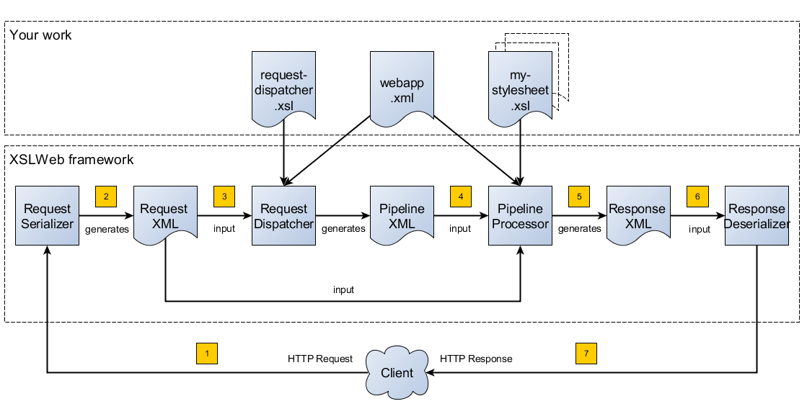

The latest version of this document can be found here.
1. The fundamentals of XSLWeb
1.1. Introduction
XSLWeb is an open source and free to use web development framework for XSLT and XQuery developers. It is based on concepts similar to frameworks like Cocoon and Servlex, but aims to be more easily accessible and pragmatic.
Using XSLWeb, XSLT/XQuery developers can develop both web applications (dynamic websites) and web services. In essence, an XSLWeb web application is one or more XSLT stylesheets (version 1.0, 2.0 or 3.0) or XQueries (version 1.0, 3.0 or 3.1) that transform an XML representation of the HTTP request (the Request XML) to an XML representation of the HTTP response (the Response XML). Which specific XSLT stylesheet or XQuery (or pipeline of XSLT stylesheets and XQueries) must be executed for a particular HTTP request is governed by another XSLT stylesheet, the request dispatcher stylesheet.
After every XSLT transformation step, an optional validation pipeline step (XML Schema or Schematron) can be added to validate the result of the previous transformation step.
During transformations, data sources can be accessed using a library of built-in extension functions that provide HTTP communication (for example to consume REST or SOAP based web services), file and directory access, relational database access and so on.
The result of a transformation pipeline can be serialized to XML, (X)HTML or plain text format and using specific serializer pipeline steps to JSON, ZIP files, PDF, Postscript or RTF (using XSL:FO and Apache FOP).
The configuration of an XSLWeb web application can be specified in an XML configuration document called webapp.xml. An XSLWeb server can contain multiple separate web applications.
Diagram 1 shows the flow of a HTTP request to a HTTP response within XSLWeb:

-
A HTTP request is sent from a client (a web browser or webservice client).
-
The HTTP request is serialized by the Request Serializer to a Request XML document. All information of the request is preserved in the XML.
-
The Request XML is the input of the Request Dispatcher, which transform the Request XML using the webapp specific XSLT stylesheet request-dispatcher.xsl. The output of this transformation is a pipeline specification, in the simplest form only specifying the path to a XSLT stylesheet that will be used to transforming the Request XML to the Response XML. This specification could also contain a pipeline of multiple XSLT transformations and XML Schema or Schematron validations.
-
The pipeline specification is the input for the Pipeline Processor, which reads the Pipeline XML and executes the pipeline transformation and validation steps. The input for the first transformation in the pipeline is the same Request XML as was used as input for the Request Dispatcher.
-
The Pipeline Processor executes your pipeline of XSLT stylesheets, XQueries and validations. The last transformation in the pipeline must generate a Response XML document which conforms to the schema «xslweb-home»/config/xsd/xslweb/response.xsd.
-
The Response XML is then passed on to the Response Deserializer, which interprets your Response XML and converts it to a HTTP response, which is sent back to the client, a web browser of webservice client (7).
1.2. The Request XML
The Request XML is an XML representation (or XML serialization) of the HTTP Request. The Request XML conforms to the XML Schema «xslweb-home»/config/xsd/xslweb/request.xsd, and contains the following information:
-
The request properties: auth-type, character-encoding, content-length, context-path, content-type, local-addr, local-name, local-port, method, path, path-info, path-translated, protocol, query-string, remote-addr, remote-host, remote-port, remote-user, requested-session-id, request-URI, request-url, scheme, server-name, server-port, servlet-path, webapp-path, is-secure, is-requested-session-id-from-cookie, is-requested-session-id-from-url and is-requested-session-id-valid.
-
HTTP headers
-
Request parameters
-
Request body
-
File uploads
-
Session information
-
Cookies
1.3. The Response XML
The Response XML is a XML representation (or XML serialization) of the HTTP Response. The Response XML must conform to the XML Schema «xslweb-home»/config/xsd/xslweb/response.xsd, and contains the following information:
-
HTTP headers
-
Response body
-
Session information
-
Cookies
1.4. The Request dispatcher XSLT stylesheet
The task of the XSLT stylesheet request-dispatcher.xsl is to dynamically generate the pipeline specification that is then used to process the Request XML and convert it to the Response XML. The input of the request dispatcher transformation is the Request XML so it has all information available to generate the correct pipeline. The output of the request dispatcher transformation is a pipeline specification that must conform to the XML Schema «xslweb-home»/config/xsd/xslweb/pipeline.xsd.
Below is an example of a very basic request dispatcher stylesheet that generates a valid pipeline for the HTTP request http://my-domain/my-webapp/hello-world.html:
<xsl:stylesheet
xmlns:xsl="http://www.w3.org/1999/XSL/Transform"
xmlns:req="http://www.armatiek.com/xslweb/request"
xmlns:pipeline="http://www.armatiek.com/xslweb/pipeline"
version="3.0">
<xsl:template match="/req:request[req:path = '/hello-world.html']">
<pipeline:pipeline>
<pipeline:transformer
name="hello-world"
xsl-path="hello-world.xsl"
log="true"/>
</pipeline:pipeline>
</xsl:template>
</xsl:stylesheet>The following example uses the request parameter lang in the request http://my-domain/my-webapp/hello-world.html?lang=en to determine the stylesheet. This lang parameter is also passed to the stylesheet as a stylesheet parameter:
<xsl:stylesheet
xmlns:xsl="http://www.w3.org/1999/XSL/Transform"
xmlns:req="http://www.armatiek.com/xslweb/request"
xmlns:pipeline="http://www.armatiek.com/xslweb/pipeline"
version="3.0">
<xsl:template match="/req:request[req:path = '/hello-world.html']">
<xsl:variable
name="lang"
select="req:parameters/req:parameter[@name='lang']/req:value[1]"/>
<pipeline:pipeline>
<pipeline:transformer
name="hello-world"
xsl-path="{concat('hello-world-', $lang, '.xsl')}">
<pipeline:parameter
name="lang"
uri="http://www.armatiek.com/xslweb/my-namespace"
type="xs:string">
<pipeline:value>
<xsl:value-of select="$lang"/>
</pipeline:value>
</pipeline:parameter>
</pipeline:transformer>
</pipeline:pipeline>
</xsl:template>
</xsl:stylesheet>A pipeline consists of:
-
One or more of the following transformation pipeline steps:
-
transformer: transforms the input of the pipeline step using an XSLT version 1.0, 2.0 or 3.0 stylesheet.
-
query: processes the input of the pipeline step using an XQuery version 1.0, 3.0 or 3.1 query.
-
transformer-stx: transform the input of the pipeline step using a STX (Streaming Transformations for XML) version 1.0 stylesheet.
-
-
Zero or more of the following validation pipeline steps:
-
schema-validator: validates the input of the step using an XML Schema version 1.0.
-
schematron-validator: validates the input of the step using an ISO Schematron schema.
-
-
Zero or one of the following serialization pipeline step
-
json-serializer: serializes XML output to a JSON representation.
-
zip-serializer: serializes a XML ZIP specification to an actual ZIP file.
-
resource-serializer: serializes a text or binary file to the response.
-
fop-serializer: serializes XSL-FO generated in a previous pipeline step to PDF using the Apache FOP XSL-FO processor.
-
See Pipeline steps for a more in depth overview of these different pipeline steps.
The output of the pipeline can be cached by specifying extra attributes on the <pipeline:pipeline/> element, see Response caching.
In development-mode, the output of the (intermediate) transformation steps can be logged to a log file, see chapters Development mode and production mode and Logging.
1.5. The pipeline transformation stylesheets
The result of the request dispatcher stylesheet is a pipeline specification containing one or more transformation, query, validation or serialization steps. The input of the first stylesheet or query in the pipeline is the Request XML, the output of the last stylesheet in the pipeline must conform to the Response XML schema.
XSLWeb extends the standard XSLT/XPath 1.0, 2.0 and 3.0 functionality in a number of ways:
-
XSLWeb provides a number of built-in XPath extension functions that you can use to read and write files and directories, execute HTTP requests, access the Request, Response and Context, Session and WebApp objects, log messages, send e-mails and so on, see XPath extension function library.
-
Other pipelines can be called from within a stylesheet and the result of this nested pipeline can be used or embedded in the calling stylesheet by passing a URI that starts with the scheme “xslweb://” to the standard XSLT document() function, see Nested pipelines.
-
URLs that are passed to XSLT’s document() or XQuery’s doc() function and must be proxied through a proxy server can be provided with two extra request parameters: proxyHost and proxyPort.
-
Within every transformation a number of standard stylesheet parameters is available, see Stylesheet parameters.
1.6. Web applications
An XSLWeb installation can contain multiple separate web applications. A web application can be added under the folder «xslweb-home»/webapps and has the following minimal folder structure (bold):
-
my-webapp/
-
lib/
-
static/
-
xsl/
-
request-dispatcher.xsl
-
my-stylesheet.xsl
-
-
xquery/
-
my-query.xq
-
-
stx/
-
my-stylesheet.stx
-
-
xsd/
-
my-xml-schema.xsd
-
-
sch/
-
my-schematron.sch
-
-
webapp.xml
-
This web application can be accessed by using the following uri:
If you use the jar distribution of XSLWeb with default parameters, this uri will be:
Out of the box, XSLWeb contains four web applications, “documentation”, “examples”, “my-webapp” and “ROOT”. The ROOT web application is used for Uri’s that doesn’t contain a reference to a web application, for instance:
The folder my-webapp can have any name you like (provided it doesn’t contain spaces or other strange characters). The folder lib can contain any custom XPath extension functions you have developed in Java and 3rd party libraries they depend on, see Custom extension functions. The folder static contains all static files you use in your web application, like images, css stylesheets and javascript files. The folder xsl contains the XSLT stylesheet request-dispatcher.xsl and at least one pipeline XSLT stylesheet that transforms Request XML to Response XML. The folders xsd and sch can contain XML Schema or Schematron validation specifications. The file webapp.xml contains further configuration of your web application.
The file webapp.xml contains the configuration of your web application. It must conform to the XML Schema «xslweb-home»/config/xsd/xslweb/xslweb-webapp.xsd, and contains the following configuration items:
-
Title: The title of your web application
-
Description: The description of your web application
-
Development-mode: see Development mode and production mode.
-
Resources: The definition of requests to static files that should not be processed by the request dispatcher (but should be served straight away) and the duration these resources should be cached by the browser (default 4 hours).
-
Parameters: The definition of webapp specific configuration parameters that are passed as stylesheet parameters to every XSLT transformation, see Stylesheet parameters.
-
Jobs: The definition of scheduled jobs, see Job scheduling.
-
Data sources: the definition of JDBC data sources.
-
FOP configurations: configurations for the Apache FOP serialization step, see fop-serializer step.
See Appendix C: Webapp XML example for an example of a webapp.xml configuration.
2. Pipeline steps
2.1. Transformation pipeline steps
The following transformation pipeline steps are available:
-
transformer
-
query
-
transformer-stx
2.1.1. transformer step
The transformer step transforms the input of the pipeline step using an XSLT version 1.0, 2.0 or 3.0 stylesheet.
Example:
<pipeline:pipeline>
<pipeline:transformer name="my-xsl-step" xsl-path="my-stylesheet.xsl"/>
</pipeline:pipeline>2.1.2. query step
The query step processes the input of the pipeline step using an XQuery version 1.0, 3.0 or 3.1 query.
Example:
<pipeline:pipeline>
<pipeline:transformer name="my-xquery-step" xquery-path="my-query.xq"/>
</pipeline:pipeline>See also example 27 of the examples webapp
2.1.3. transformer-stx step
The transformer-stx step transforms the input of the pipeline step using a STX (Streaming Transformations for XML) version 1.0 stylesheet.
Example:
<pipeline:pipeline>
<pipeline:transformer-stx name="my-stx-step" stx-path="my-stylesheet.stx"/>
</pipeline:pipeline>See also example 28 of the examples webapp
These steps could be combined in a pipeline as follows:
<pipeline:pipeline>
<pipeline:transformer-stx name="my-stx-step" stx-path="my-stylesheet.stx"/>
<pipeline:transformer name="my-xsl-step" xsl-path="my-stylesheet.xsl"/>
<pipeline:query name="my-xquery-step" xquery-path="my-query.xq"/>
</pipeline:pipeline>2.1.4. Extensions
XSLWeb extends the standard functionality of the transformation steps in a number of ways:
-
XSLWeb provides a number of built-in XPath extension functions to the transformer and query steps (not the transformer-stx step) that you can use to read and write files and directories, execute HTTP requests, access the Request, Response and Context, Session and WebApp objects, log messages, send e-mails and so on, see XPath extension function library.
-
Other pipelines can be called from within a stylesheet or query and the result of this nested pipeline can be used or embedded in the calling stylesheet/query by passing a URI that starts with the scheme “xslweb://” to the standard XSLT/XQuery document() function or the STX stx:process-children element, see Nested pipelines.
-
Within every transformation of query a number of standard stylesheet parameters is available, see Stylesheet parameters.
2.2. Validation pipeline steps
XSLWeb supports the XML validation of the output of a transformation pipeline step by adding a validation pipeline step after the transformation step.
The following validation pipeline steps are available:
-
schema-validator
-
schematron-validator
2.2.1. schema-validator step
The schema-validator step validates the output of the previous step using an XML Schema version 1.0.
<pipeline:pipeline>
<pipeline:transformer name="my-transformation " xsl-path="my-transormation.xsl"/>
<pipeline:schema-validator
name="schema-validator"
xsl-param-namespace="http://www.armatiek.com/xslweb/validation"
xsl-param-name="schema-validation-report">
<pipeline:schema-paths>
<pipeline:schema-path>my-schema.xsd</pipeline:schema-path>
</pipeline:schema-paths>
</pipeline:schema-validator>
</pipeline:pipeline>The location(s) of the XML schemas can be specified in the subelements schema-path. These paths must be relative to the directory «webapp»/xsd.
Any validation warnings and errors are written to the log file. If you specify the attribute xsl-param-name (and optional attribute xsl-param-namespace), a validation report (in XML format) is added as a stylesheet parameter of type document-node() to the next XSLT transformation step in the pipeline.
Validation properties (like http://javax.xml.XMLConstants/property/accessExternalSchema) and features (like http://javax.xml.XMLConstants/feature/secure-processing) can be specified in the features and properties subelements (see pipeline.xsd).
See also example 25 of the examples webapp.
2.2.2. schematron-validator step
The Schematron-validator step validates the output of the previous step using an ISO Schematron schema:
<pipeline:pipeline>
<pipeline:transformer name="my-transformation " xsl-path="my-transormation.xsl"/>
<pipeline:schematron-validator
name="schematron-validator"
schematron-path="my-schematron.sch "
xsl-param-namespace="http://www.armatiek.com/xslweb/validation"
xsl-param-name="schematron-validation-report">
</pipeline:schematron-validator>
</pipeline:pipeline>The location of the Schematron schema can be specified in the attribute schematron-path. This path must be relative to the directory «xslweb-home»/sch.
Any validation warnings and errors are written to the log file. If you specify the attribute xsl-param-name (and optional attribute xsl-param-namespace), the validation report (in SVRL format) is added as a stylesheet parameter of type document-node() to the next XSLT transformation step in the pipeline.
The Schematron phase can be specified using the optional attribute phase on the element schematron-validator (see pipeline.xsd).
See also example 25 of the examples webapp.
2.3. Serialization pipeline steps
The way the result of the transformation pipeline steps is serialized to XML, XHTML, HTML or text can be specified by the serialization attributes of the element xsl:output in the last stylesheet or query of the pipeline, using the attributes method, encoding, indent, omit-xml-declaration and so on.
In case the output of the pipeline should not be XML, XHTML, HTML or text, a specific serialization pipeline step can be added at the end of the pipeline. XSLWeb provides the serialization steps:
-
json-serializer
-
zip-serializer
-
resource-serializer
-
fop-serializer
2.3.1. json-serializer step
The json-serializer step serializes XML to a JSON representation. This step can be added as the last step in a pipeline like this:
<pipeline:pipeline>
<pipeline:transformer
name="my-transformation "
xsl-path="my-transformation.xsl"/>
<pipeline:json-serializer
name="json-serialization"
auto-array="false"
pretty-print="true">
<pipeline:json-serializer/>
</pipeline:pipeline>The pipeline step supports the following attributes:
-
auto-array
-
auto-primitive
-
multi-pi
-
namespace-declarations
-
namespace-separator
-
pretty-print
-
virtual-root-namespace
-
virtual-root-name
-
repairing-namespaces
See for an explanation of these properties the documentation of StAXON.
Namespace declarations can be specified by adding namespace-declaration elements under the namespace-declarations sub element of json-serializer (see pipeline.xsd).
See also example 18 of the examples webapp.
2.3.2. zip-serializer step
The zip-serializer step serializes an XML representation of the contents of a ZIP file to the actual file.
A ZIP serializer pipeline step can be added as the last step in a pipeline like this:
<pipeline:pipeline>
<pipeline:transformer
name="my-zip-serialization"
xsl-path="my-zip-serialization.xsl"/>
<pipeline:zip-serializer name="zip"/>
</pipeline:pipeline>The last transformation step in the pipeline has to generate a response like the following XML:
<resp:response status="200">
<resp:body>
<zip:zip-serializer
xmlns:zip="http://www.armatiek.com/xslweb/zip-serializer">
<zip:file-entry
name="file/myfile.txt"
src="/home/john/myfile.txt"/>
<zip:inline-entry
name="dir1/test.xml"
method="xml"
encoding="UTF-8"
omit-xml-declaration="no"
indent="yes">
<a>
<b>Hello World</b>
</a>
</zip:inline-entry>
</zip:zip-serializer>
</resp:body>
</resp:response>The element zip-serializer can contain two elements:
-
zip:file-entry: a representation of a disk file that must be serialized to the zip file. The attribute “src” holds the path to the file, the attribute “name” holds the name (path) of the file in the serialized zip file.
-
zip:inline-entry: an inline XML, HTML or text fragment that must be serialized to the ZIP file. The attribute “name” holds the name (path) of the file in the serialized zip file. Other attributes specify the serialization behavior and are the same as the attributes of xsl:output.
See also example 23 of the examples webapp.
2.3.3. resource-serializer step
The resource serializer returns a stored text or binary file to the client. It is typically used in scenarios where a file is dynamically generated during pipeline execution (for instance by using the extension function exec-external()) and then must be returned to the client in the same request. Another scenario is to create download links to static files that are located on the server outside the scope of the webapp’s “static” directory.
The resource serializer pipeline step can be added as the last step in a pipeline like this:
<pipeline:pipeline>
<pipeline:transformer
name="resource-serialization"
xsl-path="resource-serialization.xsl"/>
<pipeline:resource-serializer name="resource"/>
</pipeline:pipeline>In this example the stylesheet resource-serialization.xsl must generate a XML fragment containing information that the resource serializer uses to create the desired response. The stylesheet must generate an element resource-serializer in the namespace http://www.armatiek.com/xslweb/resource-serializer. On this element the following attributes can be set:
-
path: the local path to the file that must be returned to the client.
-
content-type (optional): the content type (mime type) that must be set on the response. If this attribute is not set, XSLWeb will try to determine the content type automatically.
-
content-disposition-filename (optional): this attribute can be used to force the browser to display a “Save as” dialog (instead of display the file “inline”). The specified filename will be used as the default filename in de dialog.
An example of the output of the XSLT stylesheet resource-serialization.xsl is:
<res:resource-serializer
path="webapps/examples/xsl/resource/leaves.jpg"
content-type="image/jpg"
content-disposition-filename="my-image.jpg"/>See also example 26 of the examples webapp
2.3.4. fop-serializer step
The fop-serializer step serializes XSL:FO format generated in a previous pipeline step to document formats like PDF or RTF using the Apache FOP processor version 2.2.
The FOP serializer pipeline step can be added as the last step in a pipeline like this:
<pipeline:pipeline>
<pipeline:transformer
name="my-xsl-fo-serialization"
xsl-path="my-xsl-fo-serialization.xsl"/>
<pipeline:fop-serializer name="fop-serialization"/>
</pipeline:pipeline>The last transformation step in the pipeline has to generate a response like the following XML:
<resp:response status="200">
<resp:body>
<fop:fop-serializer
xmlns:fop="http://www.armatiek.com/xslweb/fop-serializer"
output-format="application/pdf"
config-name="default">
<fo:root xmlns:fo="http://www.w3.org/1999/XSL/Format">
<!-- Your further XSL:FO code -->
</fo:root>
</fop:fop-serializer>
</resp:body>
</resp:response>The fop:fop-serializer element supports the following attributes:
-
config-name: the name of a FOP configuration in webapp.xml.
-
output-format (optional): the output format of the serialization, like “application/pdf” (default), application/postscript, application/rtf (see the FOP class MimeConstants.java).
-
pdf-a-mode (optional): specify a PDF/A profile:
-
PDF/A-1a
-
PDF/A-1b
-
PDF/A-2a
-
PDF/A-2b
-
PDF/A-2u
-
PDF/A-3a
-
PDF/A-3b
-
PDF/A-3u
-
See also example 24 of the examples webapp.
3. Stylesheet parameters
Every XSLT stylesheet that is executed within XSLWeb is provided with a number of stylesheet parameters:
-
The configuration parameters from the parameters section in the webapp.xml. The parameter’s local name can be given a namespace using the attribute uri and the type of the values can be specified using the attribute type. The value itself can be a sequence of atomic values.
-
config:home-dir: the path to the XSLWeb home directory (config = http://www.armatiek.com/xslweb/configuration)
-
config:webapp-dir: the path to the base directory of the webapp.
-
config:webapp-path: The path in de url to the web application (“/” for the webapp ROOT and “/” + webapp-name for other webapps).
-
config:development-mode: whether the webapp runs in development-mode or production-mode.
-
The Java HttpServletRequest, HttpServletResponse and WebApp objects. These are used in custom XPath extension functions.
Pipeline stylesheets are also provided with any parameters that are defined within the element pipeline:transformer in request-dispatcher.xsl. The parameter’s local name can be given a namespace using the attribute uri and the type of the values can be specified using the attribute type. The value itself can be a sequence of atomic values.
The parameters only have to be declared in the stylesheets (as <xsl:param/> elements) when they are actually used. The parameters for the Java objects doesn’t have to be declared at all.
4. Nested pipelines
It is possible to call another pipeline from a stylesheet using the standard XSLT function document() providing an URL that starts with the scheme xslweb, for instance:
<xsl:sequence select="document('xslweb:///examples/nestedpipeline.html')"/>where examples is the name of the webapp of the nested pipeline. The result of the nested pipeline will be available in the calling stylesheet as a document node. The nested pipeline request will follow the flow of a normal HTTP request, including the request dispatcher stylesheet. A nested pipeline call can be seen as an “internal request”, it does not go through the HTTP stack. [_Response_serialization_1 .anchor]#
5. Development mode and production mode
In webapp.xml a web application can be configured to run in development mode or production mode. The differences between development and production mode are:
-
In development mode, compiled XSLT stylesheets are not cached. That means that for every request all stylesheets in the pipeline are reread from disk and recompiled and therefore changes will be visible immediately. In production mode, stylesheets are compiled and cached the first time they are used. However, in production mode, changes in stylesheets will automatically be detected by the file alteration monitor and the complete web application will be reloaded. So there is no need to restart the application server when deploying stylesheets in production mode. The file alteration monitor will also detect and pick up changes in the webapp.xml configuration file and plugin extension function library jars.
-
In development mode, the caching framework (using the cache attributes on the pipeline element) is disabled, so no caching is performed.
-
In development mode, the output of a pipeline is not streamed directly to the client (e.g. the browser) but instead buffered until the complete pipeline is executed. If an error occurs during the execution of the pipeline, the error message and stack trace are sent to the client, making it easier to debug the error. If an error occurs in production mode, only a HTTP status code 500 (internal server error) is sent to the client (that is, if the response is not already committed by the application server).
-
In development mode a pipeline step can be configured to log its (intermediate) output to the log file «xslweb-home»/logs/pipeline.log, by specifying log=”true” on the pipeline step. In production mode all logging of the output of pipeline steps is disabled.
-
In development mode, the generated XSLT of a Schematron schema is logged to the log file (with severity INFO).
6. Logging
Log files are stored in the directory «xslweb-home»/logs. This directory contains two log files, xslweb.log and pipeline.log.
Regular XSLWeb specific log messages are logged to xslweb.log. It’s also possible to write to this log file from web application stylesheets using the XPath extension function log:log(), see Logging functions.
In development mode a pipeline step can be configured to log its (intermediate) output to the log file pipeline.log, by specifying log=”true” on the pipeline step.
By default the log files are rotated when they reach the size of 10Mb, and a maximum of 8 backups is retained.
7. Response caching
The output of a pipeline can be cached by providing optional caching attributes on the element pipeline:pipeline in the stylesheet request-dispatcher.xsl. The purpose of caching the response output is to gain performance; a response that can be served from cache will be returned quicker because no transformations are necessary and also the load on the server is decreased.
The following attributes are supported:
-
cache (xs:boolean): specifies whether the output of the response must be cache. Default: false.
-
cache-key (xs:string): specifies the key under which the output of the pipeline must be cached, default the concatenation of req:method, req:request-URI and req:query-string. It is only necessary to override the default mechanism if for instance the query string contains parameters that are different for every request, like with tracking software.
-
cache-time-to-live (xs:integer): The number of seconds the output will be cached from the time it was first added to the cache. Default: 60 seconds.
-
cache-time-to-idle: (xs:integer): The number of seconds the output will be cached from the last time it was actually used. Default”: 60 seconds.
-
cache-scope (xs:string): One of “webapp” or “user”. It specifies whether the output should be cached and reused by all users of the web application (“webapp”), or for a specific user (“user”). Default “webapp”.
-
cache-headers (xs:boolean): Specifies whether XSLWeb should automatically provide the HTTP response cache headers: ETag, Last-Modified and Expires. It supports conditional GET. Because browsers and other HTTP clients have the expiry information returned in the response headers, they do not even need to request the page again. Even once the local browser copy has expired, the browser will do a conditional GET. Default: false.
XSLWeb uses the standard caching framework Ehcache to support its caching (see http://ehcache.org). More advanced configuration properties can be specified in the Ehcache specific configuration file «xslweb-home»/config/xslweb-ehcache.xml, like for instance how many responses should be cached in memory and how many on disk. See the ehcache documentation for further details.
N.B. Response caching is only enabled in production mode, see Development mode and production mode.
8. Job scheduling
When you want to execute a pipeline (repeatedly) on a certain moment without user interaction, you can use the job scheduling functionality of XSLWeb. The jobs can be defined and scheduled in the webapp.xml configuration file, for example:
<job>
<name>MyJob</name>
<uri>job/my-job</uri>
<!-- Execute at 10:15am on the 15th day of every month: -->
<cron>0 15 10 15 * ?</cron>
<concurrent>false</concurrent>
</job>The elements have the following meaning:
-
name: the name of the scheduled job. Used in log files.
-
uri: the Uri of the request to a pipeline within the current webapp. This internal request will follow the same flow of a normal HTTP request, including the request dispatcher stylesheet. The Uri does not contain the name of the webapp.
-
cron: the cron expression which is a string comprising five or six fields separated by white space that represents a set of times to execute the job (see http://en.wikipedia.org/wiki/Cron#CRON_expression).
-
concurrent: specifies whether or not the job can run concurrently with other jobs.
9. User authentication
You can implement (BASIC) user authentication by performing the following steps:
-
Include the stylesheet «xslweb-home»/xsl/system/authentication/basic/basic-authentication.xsl in your request-dispatcher.xsl stylesheet.
-
Implement the function auth:must-authenticate($request as element(request:request))): xs:boolean. In this function you can determine whether $request must be authenticated or not.
-
Implement the function auth:get-realm(): xs:string. This function must return the authentication realm.
-
Implement the function auth:login($username as xs:string, $password as xs:string): element()?. This function must authenticate $username with $password and return an empty sequence if the authentication failed or an element() containing the user profile if authentication succeeded. This element must have the name authentication and a subelement ID. The element data can be filled with arbitrary data you will need in subsequent requests.
-
This element will be stored by XSLWeb in the user’s session object under the name xslweb-userprofile so it will be available in subsequent requests.
N.B. DIGEST or other authentication methods are not yet supported. BASIC (and DIGEST) authentication is only secure if HTTPS is used!
10. Global configuration properties
In «xslweb-home»/config/xslweb.properties two global properties can be set:
-
xslweb.trustallcerts: specifies if all SSL certificates must be trusted when XSLWeb connects to an external HTTPS server.
-
xslweb.parserhardening: specifies if the Xerces XML parser must be configured to resist XML External Entity (XXE) attacks.
11. XPath extension function library
11.1. Built in extension functions
XSLWeb contains a set of readily available XPath extension functions. To use these extension functions in your XSLT stylesheets you only have to declare the namespace they are defined in.
11.2. Response functions
These functions can be used to set/change specific information in the HTTP response. For a large part this information can also be specified in the Response XML document, see Appendix B: Response XML example for an example of a Response XML document.
Namespace: http://www.armatiek.com/xslweb/request
Functions:
function response:add-cookie($cookie as element(response:cookie)) as xs:boolean?Adds the specified HTTP cookie to the response. An example of a cookie element:
<xsl:variable name="my-cookie" as="element(resp:cookie)">
<resp:cookie>
<!-- Comment describing the purpose of this cookie: -->
<resp:comment>Comment 1</resp:comment>
<!-- The domain within which this cookie should be presented: -->
<resp:domain>
<xsl:value-of select="/*/req:server-name"/>
</resp:domain>
<!-- The maximum age in seconds for this cookie: -->
<resp:max-age>-1</resp:max-age>
<!-- The name of the cookie -->
<resp:name>cookie-1</resp:name>
<!-- The path for the cookie to which the client should
return the cookie: -->
<resp:path>
<xsl:value-of select="/*/req:context-path"/>
</resp:path>
<!-- Indicates to the browser whether the cookie should only
be sent using a secure protocol, such as HTTPS or SSL: -->
<resp:is-secure>false</resp:is-secure>
<!-- The value of the cookie -->
<resp:value>cookie-1-value</resp:value>
<!-- The version of the cookie protocol that this Cookie
complies with: -->
<resp:version>0</resp:version>
</resp:cookie>
</xsl:variable>XSLWeb makes uses of the Java Cookie mechanism. See Cookie.
function response:add-date-header($name as xs:string, $value as xs:dateTime) as xs:boolean?Adds a HTTP response header with the given name and date-value.
function response:add-int-header($name as xs:string, $value as xs:integer) as xs:boolean?Adds a HTTP response header with the given name and integer value.
function response:add-header($name as xs:string, $value as xs:string) as xs:boolean?Adds a HTTP response header with the given name and value.
function response:encode-redirect-url($url as xs:string) as xs:stringEncodes the specified URL for use in the send-redirect function or, if encoding is not needed, returns the URL unchanged.
function response:encode-url($url as xs:string) as xs:stringEncodes the specified URL by including the session ID, or, if encoding is not needed, returns the URL unchanged.
function response:is-committed() as xs:booleanReturns a boolean indicating if the response has been committed. A committed response has already had its status code and headers written.
function response:set-buffer-size($size as xs:integer) as xs:boolean?Sets the preferred buffer size for the body of the response. The servlet container will use a buffer at least as large as the size requested. A larger buffer allows more content to be written before anything is actually sent, thus providing XSLWeb with more time to set appropriate status codes and headers. A smaller buffer decreases server memory load and allows the client to start receiving data more quickly. This function must be called before any response body content is written
function response:set-status($status as xs:integer) as xs:boolean?Sets the HTTP status code for this response.
See example 5 how to use the response functions to set cookies.
11.3. Session functions
HTTP protocol and Web Servers are stateless, what it means is that for web server every request is a new request to process and they can’t identify if it’s coming from client that has been sending request previously.
But sometimes in web applications, we should know who the client is and process the request accordingly. For example, a shopping cart application should know who is sending the request to add an item and in which cart the item has to be added or who is sending checkout request so that it can charge the amount to correct client.
Session is a conversional state between client and server and it can consists of multiple request and response between client and server. Since HTTP and Web Server both are stateless, the only way to maintain a session is when some unique information about the session (session id) is passed between server and client in every request and response.
XSLWeb makes use of the session mechanism of the Java Application Server is runs on, see HttpSession.
Namespace: http://www.armatiek.com/xslweb/session
Functions:
function session:attribute-names() as xs:string*Returns a sequence of strings containing the names of all attributes bound to this session.
function session:get-attribute($name as xs:string) as item()*Returns the attribute bound with the specified $name in this session, or an empty sequence if no attribute is bound under the name.
function session:invalidate() as xs:boolean?Invalidates this session then unbinds any attributes bound to it.
function session:set-attribute($name as xs:string, attr as item()*) as xs:boolean?Binds an attribute to this session, using the name specified.
function session:set-max-active-interval($interval as xs:integer) as xs:boolean?Specifies the time, in seconds, between client requests before the servlet container will invalidate this session automatically.
See example 7 how to use the session functions to set and get session attributes.
11.4. Webapp functions
These functions can be used to get and set web application specific attributes. These can be used to share session independent attribute between multiple requests within one web application.
Namespace: http://www.armatiek.com/xslweb/functions/webapp
Functions:
function webapp:get-attribute($name as xs:string) as item()*function webapp:get-cache-value($cache-name as xs:string, $key-name as xs:string) as item()*function webapp:set-attribute($name as xs:string, attr as item()*) as xs:boolean?function webapp:set-cache-value($cache-name as xs:string, $key-name as xs:string, $attrs as item()*, $time-to-idle as xs:integer, $time-to-live as xs:integer) as xs:boolean?See example 7 how to use the webapp functions to set and get webapp attributes, and example 14 how to use the caching functions.
11.5. Context functions
These functions can be used to get and set “XSLWeb context” specific attributes. These can be used to share attributes between web applications.
Namespace: http://www.armatiek.com/xslweb/functions/context
Functions:
function context:get-attribute($name as xs:string) as item()*function context:set-attribute($name as xs:string, attr as item()*) as xs:boolean?See example 7 how to use the context functions to set and get session attributes.
11.6. EXPath File
EXPath File is a standard file system API for XPath. It defines extension functions to perform file system related operations such as listing, reading, writing, copying and moving files or directories. The API is described here.
Namespace: http://expath.org/ns/file
Functions:
function file:exists($path as xs:string) as xs:booleanfunction file:is-dir($path as xs:string) as xs:booleanfunction file:is-file($path as xs:string) as xs:booleanfunction file:last-modified($path as xs:string) as xs:dateTimefunction file:size($file as xs:string) as xs:integerfunction file:append($file as xs:string, $items as item()*) as xs:boolean?function file:append($file as xs:string, $items as item()*, $params as element(output:serialization-parameters)) as xs:boolean?function file:append-binary($file as xs:string, $value as xs:base64Binary) as xs:boolean?function file:append-text($file as xs:string, $value as xs:string) as xs:boolean?function file:append-text($file as xs:string, $value as xs:string, $encoding as xs:string) as xs:boolean?function file:append-text-lines($file as xs:string, $values as xs:string*) as xs:boolean?function file:append-text-lines($file as xs:string, $lines as xs:string*, $encoding as xs:string) as xs:boolean?function file:copy($source as xs:string, $target as xs:string) as xs:boolean?function file:create-dir($dir as xs:string) as xs:boolean?function file:create-temp-dir($prefix as xs:string, $suffix as xs:string) as xs:stringfunction file:create-temp-dir($prefix as xs:string, $suffix as xs:string, $dir as xs:string) as xs:stringfunction file:create-temp-file($prefix as xs:string, $suffix as xs:string) as xs:stringfunction file:create-temp-file($prefix as xs:string, $suffix as xs:string, $dir as xs:string) as xs:stringfunction file:delete($path as xs:string) as xs:boolean?function file:delete($path as xs:string, $recursive as xs:boolean) as xs:boolean?function file:list($dir as xs:string) as xs:string*function file:list($dir as xs:string, $recursive as xs:boolean) as xs:string*function file:list($dir as xs:string, $recursive as xs:boolean, $pattern as xs:string) as xs:string*function file:move($source as xs:string, $target as xs:string) as xs:boolean?function file:read-binary($file as xs:string) as xs:base64Binaryfunction file:read-binary($file as xs:string, $offset as xs:integer) as xs:base64Binaryfunction file:read-binary($file as xs:string, $offset as xs:integer, $length as xs:integer) as xs:base64Binaryfunction file:read-text($file as xs:string) as xs:stringfunction file:read-text($file as xs:string, $encoding as xs:string) as xs:stringfunction file:read-text-lines($file as xs:string) as xs:string*function file:read-text-lines($file as xs:string, $encoding as xs:string) as xs:string*function file:write($file as xs:string, $items as item()*) as xs:boolean?function file:write($file as xs:string, $items as item()*, $params as element(output:serialization-parameters)) as xs:boolean?function file:write-binary($file as xs:string, $value as xs:base64Binary) as xs:boolean?function file:write-binary($file as xs:string, $value as xs:base64Binary, $offset as xs:integer) as xs:boolean?function file:write-text($file as xs:string, $value as xs:string) as xs:boolean?function file:write-text($file as xs:string, $value as xs:string, $encoding as xs:string) as xs:boolean?function file:write-text-lines($file as xs:string, $values as xs:string*) as xs:boolean?function file:write-text-lines($file as xs:string, $values as xs:string*, $encoding as xs:string) as xs:boolean?function file:name($path as xs:string) as xs:stringfunction file:parent($path as xs:string) as xs:string?function file:path-to-native($path as xs:string) as xs:stringfunction file:path-to-uri($path as xs:string) as xs:anyURIfunction file:resolve-path($path as xs:string) as xs:stringfunction file:dir-separator() as xs:stringfunction file:line-separator() as xs:stringfunction file:path-separator() as xs:stringfunction file:temp-dir() as xs:stringThe structure of element(output:serialization-parameters) is described in XSLT and XQuery Serialization 3.0. See example 10 how to use some of the EXPath File functions.
11.7. EXPath HTTP Client
These functions are an implementation of the specification: EXPath - HTTP Client Module based on the Java HTTP client library OkHttp. It is an XSLWeb “native” implementation. The API defines one extension function to perform HTTP requests and handle responses.
EXPath HTTP Client provides a lot more functionality than XSLT’s document() function:
-
Execution of other HTTP methods (POST, HEAD, PUT, DELETE etc), making it possible to consume both SOAP and REST based web services.
-
Request text or even binary documents.
-
Authentication (Basic and Digest).
-
Specify HTTP headers in the request and read the HTTP headers of the response.
-
Execute requests to HTML pages and parse them as well-formed XML.
Not implemented at this time:
-
Multipart responses (multipart requests are supported)
-
Other authentication methods than "Basic"
Extensions to the specifications:
-
Proxy server support via the attributes "http:request/@proxy-host","http:request/@proxy-port", "http:request/@proxy-username", "http:request/@proxy-password"
-
Trust all SSL certificates via the attribute http:request/@trust-all-certs (xs:boolean, default: false())
Further remarks:
-
The default timeout (connect/write/read/cal) is 30 seconds (can be changed via http:request/@timeout)
-
Certificate authorities of the host platform are trusted
Namespace: http://expath.org/ns/http-client
Functions:
function http:send-request($request as element(http:request)) as item()function http:send-request($request as element(http:request)?, $href as xs:string?) as item()+function http:send-request($request as element(http:request)?, $href as xs:string?, $bodies as item()*) as item()+See examples 11 and 21 how to use some of the EXPath HTTP Client function.
11.8. Base64
Namespace: http://www.armatiek.com/xslweb/functions/base64
Functions:
function base64:encode($str as xs:string) as xs:stringEncodes a string using the base64 algorithm but does not chunk the output.
function base64:decode($str as xs:string) as xs:stringDecodes a Base64 string into octets which then are converted to a UTF-8 string.
11.9. Execute external processes
Namespace: http://www.armatiek.com/xslweb/functions/exec
Functions:
function external:exec-external(
$command-line as xs:string,
$args as xs:string*,
$exit-value as xs:integer?,
$time-out as xs:integer?,
$async as xs:boolean) as xs:integerWhere $command-line is the path to the executable, $args a sequence of arguments to the application, $exit-value the exit code that is considered as success, $time-out the time in milliseconds after an asynchronous process is killed and $async indicates if the process must be started asynchronous or not.
11.10. Logging functions
Logging functionality. The logging information is written to the main XSLWeb log file, default «xslweb-home»/logs/xslweb.log.
Namespace: http://www.armatiek.com/xslweb/functions/log
Functions:
function log:log($level as xs:string, $message as item()*) as xs:booleanfunction log:log(
$level as xs:string,
$message as item()*,
$params as element(output:serialization-parameters)) as xs:booleanWhere $level is one of “ERROR”, “WARN”, “INFO” or “DEBUG”. The structure of element(output:serialization-parameters) is described in XSLT and XQuery Serialization 3.0. See example 15 how to use some of the log functions.
11.11. Email
Functionality for sending e-mail via SMTP.
Namespace: http://www.armatiek.com/xslweb/functions/email
Functions:
function email:send-email($email as element(email:email)) as xs:booleanSee example 12 how to use the send-email example and an example of the structure of element(email:email).
11.12. Serialization
Functionality for serializing a node to a string.
Namespace: http://www.armatiek.com/xslweb/functions/serialize
Functions:
function ser:serialize($nodes as node()*, $options as element(output:serialization-parameters)?) as xs:stringThe structure of element(output:serialization-parameters) is described in XSLT and XQuery Serialization 3.0.
| Deprecated: use https://www.w3.org/TR/xpath-functions-31/#func-serialize. |
11.13. Caching
Namespace: http://www.armatiek.com/xslweb/functions/cache
Functions:
Remove a cache entry from the response output cache:
function cache:remove($cache-key as xs:string) as xs:boolean?11.14. Image processing
Namespace: http://www.armatiek.com/xslweb/functions/image
Functions:
function img:scale($source as xs:string, $target as xs:string, $format-name as xs:string, $target-size as xs:integer) as xs:boolean?Resizes an image and optionally convert it to another format. $source is the path or url to the source image, $target the path to the scaled image, $format-name the name of the target format (like png, gif, jpg) and $target-size the maximum image width or height of the scaled image.
11.15. Input/Output
Namespace: http://www.armatiek.com/xslweb/functions/io
Functions:
function io:register-temp-file($path as xs:string) as xs:boolean?Registers a temporary file or directory that will automatically be deleted after the pipeline has executed.
11.16. Utilities
Namespace: http://www.armatiek.com/xslweb/functions/util
Functions:
function util:discard-document($document-node()) as document-node()Remove supplied document from memory pool so it will be released by the Java garbage collector.
function util:parse($serialized-xml as xs:string) as document-node()Parse a XML string to a document node.
| Deprecated: use https://www.w3.org/TR/xpath-functions-31/#func-parse-xml. |
11.17. Zip/Unzip
(Un)zip functionality
Namespace: http://www.armatiek.com/xslweb/functions/zip
Functions:
function zip:zip($source as xs:string, $target as xs:string) as xs:boolean?Zip a file on path $source to a new file on path $target:
function zip:unzip($source as xs:string, $target as xs:string) as xs:boolean?Unzip a file on path or url $source to a new file on path $target:
See also zip-serializer step.
11.18. UUID
Namespace: http://www.armatiek.com/xslweb/functions/uuid
Functions:
function uuid:uuid() as xs:stringGenerate a type 4 (pseudo randomly generated) universally unique identifier.
11.19. JSON
(Experimental)
Namespace: http://www.armatiek.com/xslweb/functions/json
Functions:
function json:serialize-json($items as item()*) as xs:stringSerializes a sequence of items to a JSON representation.
function json:parse-json($json as xs:string) as document-node()?Parses a JSON string to a document node.
function json:escape-json($str as xs:string) as xs:string?Escapes the characters in $str using JSON string rules.
function json:unescape-json($json as xs:string) as xs:string?Unescapes any JSON literals found in $json.
See also json-serializer step.
| Alternative: now you can also use the standard XPath 3.1 functions, see: https://www.w3.org/TR/xpath-functions-31/#json-functions. |
11.20. Dynamic (scripted) extension functions
Namespace: http://www.armatiek.com/xslweb/functions/dynfunc
Functions:
function dynfunc:register($java-classes as xs:string+) as element(function:diagnostics)?This function registers (makes available within an XSLWeb web application) one or more extension functions that are implemented in one or more Java classes defined in $java-classes. Methods that implement an extension function must be annotated with the Java annotation ExtensionFunction, for instance:
import nl.armatiek.xslweb.saxon.functions.dynfunc.ExtensionFunction;
import org.apache.commons.lang3.StringUtils;
public class MyExtensionFunctions {
/* Adds two integers: */
@ExtensionFunction(
uri="http://example.com/functions/test",
name="add",
hasSideEffects=false)
public int add(int x, int y) {
return x + y;
}
/* Removes diacritics from a string. The case will not be altered: */
@ExtensionFunction(
uri="http://example.com/functions/test",
name="strip-accents",
hasSideEffects=false)
public String stripAccents(String text) {
return StringUtils.stripAccents(text);
}
}The annotation defines the namespace uri and local name of the (qualified name of the) extension function on the XPath side and whether the extension function has side effects.
The Java code needs to be registered only once. After registering, the extension functions will be available in further XSLT transformations that are executed within the XSLWeb webapp in which the code was registered. Therefore the template event:webapp-open in events.xsl is a suitable location to register dynamic extension functions.
The Java classes must not contain a package declaration. All Java classes are supposed to be in the same (WebApp specific) package which is automatically added to the code before compilation.
The arguments and return type of the methods that implement an extension function must be of one of the following primitive types, interfaces or classes or arrays thereof:
| Java class | Equivalent XPath type |
|---|---|
boolean |
xs:boolean |
Boolean |
xs:boolean? |
String |
xs:string? |
CharSequence |
xs:string? |
long |
xs:integer |
Long |
xs:integer? |
int |
xs:integer |
Integer |
xs:integer? |
short |
xs:short |
Short |
xs:short? |
byte |
xs:byte ** |
Byte |
xs:byte? |
float |
xs:float |
Float |
xs:float? |
double |
xs:double |
Double |
xs:double? |
java.net.URI |
xs:anyURI? |
java.net.URL |
xs:anyURI? |
java.math.BigInteger |
xs:integer? |
java.math.BigDecimal |
xs:decimal? |
java.util.Date |
xs:dateTime? |
net.sf.saxon.s9api.QName |
xs:QName |
net.sf.saxon.value.StringValue |
xs:string? |
net.sf.saxon.value.BooleanValue |
xs:boolean? |
net.sf.saxon.value.DoubleValue |
xs:double? |
net.sf.saxon.value.FloatValue |
xs:float? |
net.sf.saxon.value.DecimalValue |
xs:decimal? |
net.sf.saxon.value.IntegerValue |
xs:integer? |
net.sf.saxon.value.AnyURIValue |
xs:anyURI? |
net.sf.saxon.value.QNameValue |
xs:QName? |
net.sf.saxon.value.DateValue |
xs:date? |
net.sf.saxon.value.DateTimeValue |
xs:dateTime? |
net.sf.saxon.value.TimeValue.class |
xs:time? |
net.sf.saxon.value.DurationValue |
xs:duration? |
net.sf.saxon.value.DayTimeDurationValue |
xs:duration? |
net.sf.saxon.value.YearMonthDurationValue |
xs:duration? |
net.sf.saxon.value.GYearValue |
xs:gYear |
net.sf.saxon.value.GYearMonthValue |
xs:gYearMonth |
net.sf.saxon.value.GMonthValue |
xs:gMonth |
net.sf.saxon.value.GMonthDayValue |
xs:gMonthDay |
net.sf.saxon.value.GDayValue |
xs:gDay |
net.sf.saxon.value.Base64BinaryValue |
xs:base64Binary |
net.sf.saxon.value.HexBinaryValue |
xs:hexBinary |
net.sf.saxon.om.Function |
function() |
net.sf.saxon.ma.map.MapItem |
map(*) |
net.sf.saxon.om.NodeInfo |
node(), element(), attribute(), text(), comment(), processing-instruction() |
net.sf.saxon.om.TreeInfo |
document-node() |
net.sf.saxon.expr.XPathContext |
The current Saxon XPathContext object * |
nl.armatiek.xslweb.configuration.Context |
The current XSLWeb Context object * |
nl.armatiek.xslweb.configuration.WebApp |
The current XSLWeb WebApp object * |
javax.servlet.http.HttpSession |
The current JEE session object * |
javax.servlet.http.HttpServletRequest |
The current JEE request object * |
javax.servlet.http.HttpServletResponse |
The current JEE response object * |
() These objects does not have to be specified in the XPath function call, only as arguments in the Java call method. These arguments must be specified first, before arguments that are specified in the XPath function call.
(*) byte[] maps to xs:unsignedByte*
When the extension function is called from XPath, the equivalent XPath type (from the second column) must be used.
If the registration and code compilation succeeds, the function will return an empty sequence. When there are errors or warnings during code compilation, the function will return an element function:diagnostics. An example of such diagnostics element is:
<dynfunc:diagnostics>
<dynfunc:diagnostic
code="compiler.err.cant.resolve.location"
line="8"
column="46"
start="255"
end="280"
kind="ERROR"
message="cannot find symbol
symbol: class LongestCommonSubsequenceX
location: class Example21"
position="255"/>
</dynfunc:diagnostics>Within the extension function code all Java classes from the classpath of the XSLWeb Java web application can be used or imported.
The function can raise an exception with one of the following error codes:
| Code | Description |
|---|---|
err:DF001 |
Generic error compiling and registering extension function classes, %s |
err:DF002 |
No Java compiler could be found. Are you using a JDK version of the Java platform? |
err:DF003 |
Could not determine classname from code unit %d |
function dynfunc:is-registered($function-name as xs:QName) as xs:booleanThis function can be used to query if a function with name $function-name is already registered within the current XSLWeb web application. The standard XSLT functions fn:function-available() can also be used.
dynfunc:call($function-name as xs:QName, $arg-1 as item()* ... $arg-n as item()*) as item()*This function can be used to execute a extension function that was registered before using the function dynfunc:register. The first argument is the qualified name of the function, the other arguments are the function parameters.
The function can raise an exception with one of the following error codes:
| Code | Description |
|---|---|
err:DF010 |
No function with name %s is registered |
err:DF011 |
The number of supplied arguments in the call to the XPath extension function %s (%d) does not match the number of declared arguments in the Java method (%d)[ , considering %d implicit objects] |
err:DF012 |
Conversion from %s to %s is not supported |
err:DF013 |
A wrapped Java InvocationTargetException, IllegalAccessException, IllegalArgumentException or InstantiationException |
A complete example:
<?xml version="1.0" encoding="UTF-8"?>
<xsl:stylesheet
xmlns:xsl="http://www.w3.org/1999/XSL/Transform"
xmlns:xs="http://www.w3.org/2001/XMLSchema"
xmlns:dynfunc="http://www.armatiek.com/xslweb/functions/dynfunc"
xmlns:err="http://www.w3.org/2005/xqt-errors"
exclude-result-prefixes="#all"
version="3.0">
<xsl:template name="my-template">
<xsl:variable name="code-units" as="xs:string+">
<xsl:text>
<![CDATA[
import nl.armatiek.xslweb.saxon.functions.dynfunc.ExtensionFunction;
import org.apache.commons.lang3.StringUtils;
public class MyExtensionFunctions {
/* Removes diacritics from a string. The case will not be altered: */
@ExtensionFunction(
uri="http://example.com/functions/test",
name="strip-accents",
hasSideEffects=false)
public String stripAccents(String text) {
return StringUtils.stripAccents(text);
}
}
]]>
</xsl:text>
</xsl:variable>
<!-- Register the extension functions in the Java code: -->
<xsl:variable
name="result"
select="dynfunc:register($code-units)"
as="element(dynfunc:diagnostics)?"/>
<xsl:choose>
<!-- Check the registration result: -->
<xsl:when test="$result/dynfunc:diagnostic/@kind = 'ERROR'">
<xsl:sequence select="$result"/>
</xsl:when>
<xsl:otherwise>
<!-- Call the functions: -->
<xsl:try>
<xsl:variable
name="function-name"
select="QName('http://example.com/functions/test', 'strip-accents')"
as="xs:QName"/>
<xsl:sequence select="dynfunc:call($function-name, 'naïve fiancé')"/>
<xsl:catch>
<xsl:value-of select="$err:description"/>
</xsl:catch>
</xsl:try>
</xsl:otherwise>
</xsl:choose>
</xsl:template>
</xsl:stylesheet>11.21. SQL
Functionality to query data from and store data in a relational database. These extension functions make use of the Java JDBC framework. You can place the JDBC driver for your database in the directory «xslweb-home»/common/lib (restart required). Then you can define a datasource in the datasources section of the application’s webapp.xml, for instance for a H2 database:
<datasource>
<name>my-datasource</name>
<driver-class>org.h2.Driver</driver-class>
<jdbc-url>jdbc:h2:file://${webapp-dir}/database/my-database.mv</jdbc-url>
<property name="user">sa</property>
</datasource>With the extension function sql:get-connection(“my-datasource”) a database connection can be retrieved from the connection pool. This connection then can be used to execute one or more queries.
The connection pool is implemented using the Java connection pool framework c3p0. The c3p0 specific properties that can be used in the datasource definition in webapp.xml are described here. De default c3p0 properties can be configured in the configuration file «xslweb-home»/config/c3p0-config.xml.
Connections and resultsets can be explicitly closed by using the extension function sql:close(). The sql:close() function on a connection will also return the connection to the connection pool. Connections and resultsets that are not closed that way will be implicitly closed at the end of the pipeline, and connections will be returned to the connection pool automatically.
JDBC drivers are available for most relational database systems (like MySQL, Oracle, PostgreSQL, MSSQL Server, Sybase, Cloudscape and Firebird), but also for non-relational database datasources like CSV files and LDAP directory services (untested).
Namespace: http://www.armatiek.com/xslweb/functions/sql
Functions:
function sql:close($connection as java.sql.Connection) as xs:boolean?Closes a database connection.
function sql:close($resultset as java.sql.ResultSet) as xs:boolean?Closes a result set.
function sql:commit($connection as java.sql.Connection) as xs:boolean?Makes all changes made since the previous commit/rollback permanent and releases any database locks currently held by this Connection object.
function sql:execute-query($connection as java.sql.Connection, $sql as xs:string) as java.sql.ResultSetExecutes query $sql and returns the result of the query as a Java ResultSet object. This ResultSet can then be passed to the function sql:get-next-row() to iterate through the records of the resultset, or sql:resultset-to-node() to get an XML representation of the complete resultset.
function sql:get-connection(
$name as xs:string,
$username as xs:string?,
$password as xs:string?,
$readonly as xs:boolean?,
$autocommit as xs:boolean?) as java.sql.ConnectionCreates or gets a database connection. XSLWeb uses a connection pool for fast creation and reuse of database connections. This function returns a Java Connection object that can be passed as a parameter to other sql functions. $name is the name of a datasource specification in the webapp.xml of the web application.
function sql:get-next-row($resultset as java.sql.ResultSet) as xs:anyAtomicType*Returns the next row in a Java ResultSet represented as a sequence of atomic types.
function sql:rollback($connection as java.sql.Connection) as xs:boolean?Undoes all changes made in the current transaction and releases any database locks currently held by this Connection.
function sql:resultset-to-node($resultset as java.sql.ResultSet) as element()Returns an XML representation of the complete ResultSet.
See example 22 how to use some of the sql extension functions.
11.22. Custom extension functions
It is also possible to write your own custom XPath extension functions in Java and add them to an XSLWeb web application. These extension functions must be integrated extension functions that use the full interface of Saxon version 9.9.
The compiled jar of a custom extension function together with any libraries that the function depend on can be placed in the folder «web-app»/lib. There is no need to restart the application server, XSLWeb will detect the jars and will load and register the extension function automatically.
11.23. Extension functions with side effects
A number of the extension functions described in previous sections perform a certain task and thereby change the state of something outside the stylesheet, like write or log to a file, send an e-mail etc. These functions don’t have any return information and should have an empty sequence as their return type. In XSLWeb, the return type of these functions is actually declared as xs:boolean? The reason is that in that case the Saxon XSLT optimizer cannot ignore these functions, because they could add something to the result tree (a boolean value). In reality, these functions never return this boolean value and always return an empty sequence. Therefore it is safe to do something like:
<xsl:sequence select="log:log('INFO', 'Hello World!')"/>without having to worry that something is written to the result tree.
12. Download, install and run XSLWeb
The sources of XSLWeb can be found on GitHub. XSLWeb is licensed under the Apache License version 2.0.
Compiled binaries of XSLWeb 3.0.1 can be downloaded in two distributions:
-
As a .zip (Windows) or .tgz (Linux/macOS) archive, containing a single executable java library (.jar) with embedded application server (Apache Tomcat 7).
-
As a web application archive (.war)
12.1. The single executable jar distribution
This distribution contains the XSLWeb home directory and a single executable java library (xslweb.jar) with embedded application server (Tomcat 7). This distribution is the easiest to install and run and is most suitable to try out and develop applications in XSLWeb.
12.1.1. Download
You can download the archives from the following locations:
12.1.2. Install
Extract the archive to a directory of your choice. You will need the Java Runtime Environment (JRE) version 1.8 or higher. At a command line, check your Java version like this:
$ java -version
openjdk version "13.0.2" 2020-01-14
OpenJDK Runtime Environment (build 13.0.2+8)
OpenJDK 64-Bit Server VM (build 13.0.2+8, mixed mode, sharing)The output will vary, but you need to make sure you have version 1.8 or higher. If no JRE/JDK is installed yet or you have an older version, download or install an Oracle JDK or an OpenJDK download / OpenJDK install. This article will help you decide which to choose (TL;DR : Do not download or use the Oracle JDK unless you intend to pay for it).
12.1.3. Run
The embedded jar version of XSLWeb can be started from the directory where the archive was extracted using the following command (one line):
java -Dxslweb.home=./home -cp xslweb.jar;home/config org.apache.tomcat.maven.runner.Tomcat7RunnerCliThe following additional arguments are supported:
-ajpPort <ajpPort> ajp port to use
-clientAuth enable client authentication for https
-D <arg> key=value
-extractDirectory <extractDirectory> path to extract war content, default value: .extract
-h,--help help
-httpPort <httpPort> http port to use
-httpProtocol <httpProtocol> http protocol to use: HTTP/1.1 or org.apache.coyote.http11.Http11Nio Protocol
-httpsPort <httpsPort> https port to use
-maxPostSize <maxPostSize> max post size in bytes to use
-keyAlias <keyAlias> alias from keystore for ssl
-loggerName <loggerName> logger to use: slf4j to use slf4j bridge on top of jul
-obfuscate <password> obfuscate the password and exit
-resetExtract clean previous extract directory
-serverXmlPath <serverXmlPath> server.xml to use, optional
-X,--debug debugNow you can open a browser and go to the address http://localhost:8080. A web page with the text “It works!” should appear. From here you can go to the examples and the documentation.
12.2. The Web Application Archive (.war) distribution
This distribution contains the XSLWeb home directory and a web application archive (.war) and is most suitable to run XSLWeb in a production setting. The web application archive is a standard J2EE web application that can be installed on any Java application server that supports Servlet Spec 3.0 (Tomcat 7+, TomEE 1.6+, WebLogic, Jetty 8+, Glassfish 3+, JBoss AS 6.x/7.x etc.).
12.2.1. Download
You can download the archives from the following locations:
12.2.2. Install
Extract the archive to a directory of your choice. This directory will contain the directory xslweb-3.0.1 containing a directory called home and a file called xslweb.war. The installation of a war is application server specific, so please consult the manual of your server for that. Regardless of which application server is used, two settings are essential:
-
The home directory of XSLWeb must be specified using a Java System Property called xslweb.home.
-
The path «xslweb-home»/config must be added to the Java classpath.
12.2.3. Run
Start your application server. Open a web browser and go to the address:
where port is the port your application server runs on. A web page with the text “It works!” should appear. From here you can go to the examples and the documentation.
12.3. Install XSLWeb as a Windows service or Linux/macOS daemon
One way to install XSLWeb as a Windows service or Linux/macOS daemon is to use YAJSW (Yet Another Java Service Wrapper). This installation involves the following steps:
-
Execute the steps described in sections 12.1.1 and 12.1.2.
-
Download YAJSW version 12.11+ from https://sourceforge.net/projects/yajsw/files/ and extract the archive in the directory created in step 1.
-
Create YAJSW wrapper config file wrapper.xslweb.conf and place it in YAJSW’s conf folder. You can use the example below. You may need to modify this example to:
-
Specify the location of java (wrapper.java.command)
-
Specify the installation directory of XSLWeb (wrapper.working.dir)
-
Change the amount of memory available to XSLWeb from 1024m (for example, 512m or 2048m)
-
# YAJSW configuration for XSLWeb
wrapper.java.command=C:/ProgramData/Oracle/Java/javapath/java.exe
wrapper.working.dir=D:\\xslweb-3.0.1
wrapper.java.app.mainclass=org.apache.tomcat.maven.runner.Tomcat7RunnerCli
wrapper.java.classpath.1 = xslweb.jar
wrapper.java.classpath.2 = home/config
wrapper.java.additional.1 = -Xmx1024m
wrapper.java.additional.2 = -Dfile.encoding=utf-8
wrapper.java.additional.3 = -Dxslweb.home=./home
wrapper.java.additional.4 = -Dorg.terracotta.quartz.skipUpdateCheck=true
wrapper.ntservice.name= XSLWEB_3_0
wrapper.ntservice.displayname= XSLWeb 3.0.1
wrapper.ntservice.description= XSLWeb 3.0.1
wrapper.ntservice.starttype=DELAYED_AUTO_START
wrapper.console.loglevel=INFO
wrapper.logfile=$\{wrapper.working.dir}/home/logs/wrapper-xslweb.log
wrapper.logfile.maxsize=10m
wrapper.logfile.maxfiles=10
wrapper.on_exit.0=SHUTDOWN
wrapper.on_exit.default=RESTARTYou can add any optional arguments mentioned in section 12.1.3 as wrapper.app.parameter.NN.
After you have created the wrapper configuration file:
-
Open a command prompt as administrator (Windows) or shell (Linux/macOS)
-
Navigate to the YAJSW folder
-
Install the service:
java -jar wrapper.jar --install conf\wrapper.xslweb.conf -
Start the service:
java -jar wrapper.jar --start conf\wrapper.xslweb.conf
XSLWeb is now running as a service/daemon, and will start automatically when the operating system starts. Open a web browser and go to the address:
A web page with the text “It works!” should appear. From here you can go to the examples and the documentation.
If you make changes to the configuration you can follow this sequence:
-
Stop the service:
java -jar wrapper.jar --stop conf\wrapper.xslweb.conf -
Remove the service:
java -jar wrapper.jar --remove conf\wrapper.xslweb.conf -
Make your changes to the wrapper or application configuration.
-
Install the service:
java -jar wrapper.jar --install conf\wrapper.xslweb.conf -
Start the service:
java -jar wrapper.jar --start conf\wrapper.xslweb.conf
13. Support for Saxon PE (Professional) and EE (Enterprise Edition)
The downloadable binaries of XSLWeb contain the open source Home Edition (HE) of the Saxon XSLT processor. You can build a version of XSLWeb that contains Saxon PE or EE by following these steps:
-
Install Java 1.8+, maven 2.2.1+ and make a clone of the git repository https://github.com/Armatiek/xslweb.git.
-
Purchase a PE or EE license from http://www.saxonica.com/.
-
Download the PE of EE package from https://www.saxonica.com/download/SaxonPE9-9-1-7J.zip or https://www.saxonica.com/download/SaxonEE9-9-1-7J.zip
-
Extract and register the jars in your local Maven repository using the following commands:
-
PE:
-
mvn install:install-file -Dfile=saxon9pe.jar -DgroupId=net.sf.saxon -DartifactId=Saxon-PE -Dversion=9.9.1-7 -Dpackaging=jar
-
mvn install:install-file -Dfile=saxon9-icu.jar -DgroupId=net.sf.saxon -DartifactId=Saxon-PE-icu -Dversion=9.9.1-7 -Dpackaging=jar
-
mvn install:install-file -Dfile=saxon9-sql.jar -DgroupId=net.sf.saxon -DartifactId=Saxon-PE-sql -Dversion=9.9.1-7 -Dpackaging=jar
-
-
EE:
-
mvn install:install-file -Dfile=saxon9ee.jar -DgroupId=net.sf.saxon -DartifactId=Saxon-EE -Dversion=9.9.1-7 -Dpackaging=jar
-
mvn install:install-file -Dfile=saxon9-icu.jar -DgroupId=net.sf.saxon -DartifactId=Saxon-EE-icu -Dversion=9.9.1-7 -Dpackaging=jar
-
mvn install:install-file -Dfile=saxon9-sql.jar -DgroupId=net.sf.saxon -DartifactId=Saxon-EE-sql -Dversion=9.9.1-7 -Dpackaging=jar
-
-
-
Place your purchased license file saxon-license.lic in [xslweb.home]/config
-
Build XSLWeb with the maven profile “Saxon-PE” or “Saxon-EE”:
-
mvn -PSaxon-PE clean install
or -
mvn -PSaxon-EE clean install
-
14. Appendix A: Request XML example
<?xml version="1.0" encoding="UTF-8"?>
<request xmlns="http://www.armatiek.com/xslweb/request">
<character-encoding>UTF-8</character-encoding>
<content-length>-1</content-length>
<context-path>/xslweb</context-path>
<local-addr>127.0.0.1</local-addr>
<local-name>127.0.0.1</local-name>
<local-port>8080</local-port>
<method>GET</method>
<path>/log/log.html</path>
<path-info>/examples/log/log.html</path-info>
<path-translated>D:\webapps\xslweb\examples\log\log.html</path-translated>
<protocol>HTTP/1.1</protocol>
<remote-addr>127.0.0.1</remote-addr>
<remote-host>127.0.0.1</remote-host>
<remote-port>55451</remote-port>
<requested-session-id>D5984A4C38D09BE74C04F1D89022AE90</requested-session-id>
<request-URI>/xslweb/examples/log/log.html</request-URI>
<request-url>http://localhost:8080/xslweb/examples/log/log.html</request-url>
<scheme>http</scheme>
<server-name>localhost</server-name>
<server-port>8080</server-port>
<servlet-path/>
<webapp-path>/examples</webapp-path>
<is-secure>false</is-secure>
<is-requested-session-id-from-cookie>true</is-requested-session-id-from-cookie>
<is-requested-session-id-from-url>false</is-requested-session-id-from-url>
<is-requested-session-id-valid>true</is-requested-session-id-valid>
<headers>
<header name="host">localhost:8080</header>
<header name="connection">keep-alive</header>
<header name="accept">text/html,application/xhtml+xml,application/xml;q=0.9,image/webp,*/*;q=0.8</header>
<header name="user-agent">Mozilla/5.0 (Windows NT 6.1; WOW64) AppleWebKit/537.36 (KHTML, like Gecko) Chrome/39.0.2171.95 Safari/537.36</header>
<header name="referer">http://localhost:8080/xslweb/examples</header>
<header name="accept-encoding">gzip, deflate, sdch</header>
<header name="accept-language">nl-NL,nl;q=0.8,en-US;q=0.6,en;q=0.4</header>
<header name="cookie">JSESSIONID=D5984A4C38D09BE74C04F1D89022AE90</header>
</headers>
<parameters>
<parameter name="country">
<value>US</value>
</parameter>
<parameter name="states">
<value>AZ</value>
<value>CA</value>
</parameter>
</parameters>
<!-- If this request was a file upload POST request:
<file-uploads>
<file-upload>
<file-path>C:\Users\John\AppData\Local\Temp\48226ce5-7bba-4986-8d1f-c4a8f34638cf\MyDocument1.docx</file-path>
<field-name>file1</field-name>
<file-name>MyDocument1.docx</file-name>
<content-type>application/vnd.openxmlformats-officedocument.wordprocessingml.document</content-type>
<size>177032</size>
</file-upload>
</file-uploads>
-->
<session>
<creation-time>2015-01-06T13:06:04.925+01:00</creation-time>
<id>D5984A4C38D09BE74C04F1D89022AE90</id>
<last-accessed-time>2015-01-06T14:36:04.909+01:00</last-accessed-time>
<max-inactive-interval>1800</max-inactive-interval>
<is-new>false</is-new>
</session>
<cookies>
<cookie>
<max-age>-1</max-age>
<name>JSESSIONID</name>
<is-secure>false</is-secure>
<value>D5984A4C38D09BE74C04F1D89022AE90</value>
<version>0</version>
</cookie>
</cookies>
</request>15. Appendix B: Response XML example
<?xml version="1.0" encoding="UTF-8"?>
<resp:response
xmlns:resp="http://www.armatiek.com/xslweb/response"
status="200">
<resp:headers>
<resp:header name="Pragma">no-cache</resp:header>
<resp:int-header name="Expires">0</resp:int-header>
<resp:date-header
name="Last-Modified">2006-04-10T13:40:23.83-05:00</resp:date-header>
</resp:headers>
<resp:session max-active-interval="1800">
<resp:attributes>
<resp:attribute name="msg">
<item type="xs:string">Hello World</item>
<item type="node()">
<msg>Hello World!</msg>
</item>
</resp:attribute>
</resp:attributes>
</resp:session>
<resp:cookies>
<resp:cookie>
<resp:comment>Comment 1</resp:comment>
<resp:domain>localhost.com</resp:domain>
<resp:max-age>-1</resp:max-age>
<resp:name>cookie-1</resp:name>
<resp:path>/examples</resp:path>
<resp:is-secure>false</resp:is-secure>
<resp:value>cookie-1-value</resp:value>
<resp:version>0</resp:version>
</resp:cookie>
</resp:cookies>
<resp:body>
<html xmlns="http://www.w3.org/1999/xhtml">
<head>
<title>Hello World!</title>
</head>
<body>
<h1>Hello World</h1>
</body>
</html>
</resp:body>
</resp:response>16. Appendix C: Webapp XML example
<?xml version="1.0" encoding="UTF-8"?>
<webapp
xmlns="http://www.armatiek.com/xslweb/webapp"
xmlns:xs="http://www.w3.org/2001/XMLSchema"
xmlns:xsi="http://www.w3.org/2001/XMLSchema-instance"
xsi:schemaLocation="http://www.armatiek.com/xslweb/webapp
../../config/xsd/xslweb/webapp.xsd">
<title>XSLWeb examples</title>
<description>XSLWeb examples</description>
<development-mode>true</development-mode>
<!-- Resources to serve straight away: -->
<resources>
<resource pattern="/favicon.ico" media-type="image/x-icon"/>
<resource
pattern="/(styles|images)/.+\.png"
media-type="image/png"
duration="P7DT0H0M0S"/>
<resource pattern="/(styles|images)/.+\.gif" media-type="image/gif"/>
<resource pattern="/(styles|images)/.+\.(jpg|jpeg)" media-type="image/jpg"/>
<resource pattern="/scripts/.+\.js" media-type="text/javascript"/>
<resource pattern="/styles/.+\.css" media-type="text/css"/>
<resource pattern="/downloads/.+\.docx?" media-type="application/msword"/>
</resources>
<!-- Stylesheet parameters: -->
<parameters>
<parameter
name="hostname"
uri="http://www.armatiek.com/xslweb/functions/email"
type="xs:string">
<value>smtp.googlemail.com</value>
</parameter>
<parameter
name="port"
uri="http://www.armatiek.com/xslweb/functions/email"
type="xs:integer">
<value>465</value>
</parameter>
<parameter
name="username"
uri="http://www.armatiek.com/xslweb/functions/email"
type="xs:string">
<value>MYUSERNAME</value>
</parameter>
<parameter
name="password"
uri="http://www.armatiek.com/xslweb/functions/email"
type="xs:string">
<value>MYPASSWORD</value>
</parameter>
<parameter
name="use-ssl"
uri="http://www.armatiek.com/xslweb/functions/email"
type="xs:boolean">
<value>true</value>
</parameter>
</parameters>
<!-- Scheduled job definitions: -->
<jobs>
<job>
<name>WriteTimeJob</name>
<uri>execute-writetime-job.html</uri>
<!-- Execute every 60 seconds: -->
<cron>0/60 * * * * ?</cron>
<concurrent>true</concurrent>
</job>
</jobs>
<datasources>
<datasource>
<name>datasource-worldcup</name>
<driver-class>org.h2.Driver</driver-class>
<jdbc-url>jdbc:h2:file://${webapp-dir}/xsl/relational-database/worldcup.mv</jdbc-url>
<property name="user">sa</property>
</datasource>
</datasources>
</webapp>